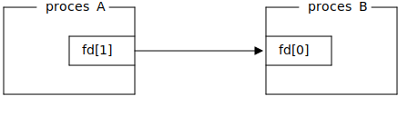
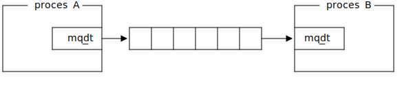

Sygnały
Sygnały
Sygnały to przerwania programowe, które system operacyjny wywołuje w celu powiadomienia procesów o zdarzeniach. Można je zaliczyć do komunikacji międzyprocesowej, ponieważ mogą zostać zainicjowane przez inny proces.

Przykładowe sygnały i domyślne reakcje
| SIGABRT |
Wysłane przez abort() |
Zakończ proces |
| SIGARLM |
Wysłane przez alarm() |
Zakończ proces |
| SIGCHLD |
Proces potomny się zakończył |
Zignoruj |
| SIGINT |
Użytkownik wysłał znak Ctrl-C |
Zakończ proces |
| SIGQUIT |
Użytkownik wysłał znak Ctrl-\ |
Zakończ proces |
| SIGKILL |
Nieprzechwytywalne zakończenie procesu |
Zakończ proces |
| SIGTERM |
Zakończenie procesu |
Zakończ proces |
| SIGSTOP |
Wymuszenie zatrzymania procesu |
Zatrzymaj proces |
| SIGCONT |
Proces został kontynuowany |
Zignoruj |
| SIGPIPE |
Zapis do potoku, którego nikt nie czyta |
Zakończ proces |
| SIGHUP |
Zamknięto terminal kontrolujący proces |
Zakończ proces |
| SIGSEGV |
Nieprawidłowy dostęp do pamięci |
Zakończ proces |
| SIGUSR1 |
Zdarzenie 1 ogólnego przeznaczenia |
Zakończ proces |
| SIGUSR2 |
Zdarzenie 2 ogólnego przeznaczenia |
Zakończ proces |
| SIGWINCH |
Terminal kontrolujący zmienił rozmiar |
Zignoruj |
| SIGILL |
Procej wykonał nieprawidłową instrukcję |
Zakończ proces |
Wysyłanie sygnałów do procesów
Do wysyłania sygnałów do procesów, służy wywołanie systemowe kill().
#include <signal.h>
int kill(pid_t pid, int sig);
Przykład: wysłanie signału SIGTERM do procesu o numerze PID 1024:
int err = kill(1024, SIGTERM);
if (err) {
/* obsługa błędów */
}
Własne procedury obsługi sygnałów
Domyślne zachowanie na odebrany sygnał (za wyjątkiem SIGKILL i SIGSTOP) można nadpisać używając wywołania systemowego sigaction().
#include <signal.h>
struct sigaction {
void (*sa_handler)(int);
void (*sa_sigaction)(int, siginfo_t *, void *);
sigset_t sa_mask;
int sa_flags;
void (*sa_restorer)(void);
};
int sigaction(int signum, const struct sigaction *restrict act, struct sigaction *restrict oldact);
Własne procedury obsługi sygnałów - przykład
Zamiast natychmiastowego zakończenia, ustawiana jest flaga przerywająca główną pętlę programu.
#include <signal.h>
#include <stdio.h>
#include <unistd.h>
volatile sig_atomic_t flag;
void signal_handler(int signal)
{
flag = 1;
}
const struct sigaction act = {
.sa_handler = signal_handler,
};
int main(void)
{
if (sigaction(SIGINT, &act, NULL))
return 1;
while (!flag) {
/* ... */
sleep(1);
}
printf("shutting down...\n");
return 0;
}
Wymagania jakie musi spełniać procedura obsługi sygnału
W procedurze obsługi sygnału można wywoływać tylko funkcje, które są wielobieżne (ang. re-entrant). Przykładem funkcji wielobieżnej jest:
int add(int a, int b)
{
return a + b;
}
Przykład funkcji, która nie jest wielobieżna:
int numbers[64], numbers_count = 0
void append(int x)
{
numbers[numbers_count] = x;
// <----- jeżeli wystąpi sygnał i append() zostanie wywołane to będzie niespójnosć.
numbers_count = (numbers_count + 1) % 64;
}
Wywoływanie funkcji nie będącą wielobieżną czyni, wywołującą ja funkcję też funkcją nie wielobieżną.
Bezpieczne funkcje w obsłudze sygnałów
Standard POSIX określa, które funkcje z biblioteki standardowej można bezpiecznie wywoływać w procedurze obsługi sygnałów. Funkcje te oznaczone są jako async-signal-safe (man signal-safety):
- async-signal-safe są na przykład:
read(), write(), open(), fork();
- niebezpieczne są na przykład:
malloc(), free(), printf(), pthread_mutex_lock().
Dodatkowo dostęp do jakichkolwiek zmiennych z static storage duration (czyli w praktyce wszelkich zmiennych globalnych) innych niż typu volatile sig_atomic_t jest niezdefiniowanym zachowaniem.
Z tego powodu najbezpieczniej jest ograniczyc procedure obsługi sygnału tylko do ustawienia flagi.
volatile sig_atomic_t flag;
void signal_handler(int signal)
{
flag = 1;
}
Synchroniczna obsługa sygnałów w osobnym wątku
Z powodu bardzo dużych ograniczeń dotyczących procedur obsługi sygnałów, lepszym rozwiązaniem może się okazać synchroniczna obsługa sygnałów w dedykowanym wątku.
pthread_mutex_lock lock = PTHREAD_MUTEX_INITIALIZER;
int flag;
void *signal_thread(void *arg)
{
const sigset_t *set = arg;
while (1) {
int signal_number;
if (sigwait(set, &signal_number))
continue;
if (!sigismember(set, signal_number))
continue;
pthread_mutex_lock(&lock);
flag = 1;
pthread_mutex_unlock(&lock);
}
return NULL;
}
Synchroniczna obsługa sygnałów - maskowanie sygnałów
Zamaskowany sygnał będzie oczekiwał do momentu wywołania sigwait().
int main(int argc, char **argv)
{
sigset_t set;
sigemptyset(&set);
sigaddset(&set, SIGINT);
if (sigprocmask(SIG_SETMASK, &set, NULL))
return 1;
pthread_t thread;
if (pthread_create(&thread, NULL, signal_thread, &set))
return 1;
int stop = 0;
while (!stop) {
/* ... */
pthread_mutex_lock(&lock);
stop = flag;
pthread_mutex_unlock(&lock);
}
pthread_cancel(thread);
pthread_join(thread, NULL);
return 0;
}
Potoki nienazwane
Potoki nienazwane
Potoki nienazwane pozwalają na jednostronne przesyłanie danych pomiędzy procesami.

Strona podręcznika: man 7 pipe.
Potoki nienazwane - tworzenie
Tworzenie potoku nienazwanego odbywa się za pomocą wywołania systemowego pipe().
#include <unistd.h>
int pipe(int fd[2]);
Utworzyć potok można w następujący sposób:
int fd[2];
int err = pipe(fd);
if (err) {
/* obsługa błędów */
}
Po wywołaniu, desktyptor fd[0] będzie służył do odczytywania danych z potoku, natomiast fd[1] będzie służył do wpisywania danych do potoku.
Potoki nienazwane - zapis
Do zapisu danych do potoku służy wywołanie systemowe write().
#include <unistd.h>
ssize_t write(int fd, const void *buf, size_t count);
ssize_t num_written = write(fd[1], "hello", 5);
if (num_written <= 0) {
/* obsługa błędu */
}
if (num_written != 5) {
/* częściowy zapis */
}
Zapisanie danych do potoku powoduje zablokowanie procesu jeżeli potok jest pełny (o ile nie jest ustawiona flaga O_NONBLOCK (man fcntl)).
Zapisanie danych do potoku, którego druga strona została zamknięta powoduje wystąpienie sygnału SIGPIPE.
Potoki nienazwane - odczyt
Do odczytu danych do potoku służy wywołanie systemowe read().
#include <unistd.h>
ssize_t read(int fd, void *buf, size_t count);
char buf[6] = {0}
ssize_t num_read = read(fd[1], buf, 5);
if (num_read < 0) {
/* obsługa błędu */
}
if (num_read == 0) {
/* druga strona została zamknięta */
}
if (num_read != 5) {
/* częściowy odczyt */
}
Odczytanie danych z potoku powoduje zablokowanie procesu jeżeli potok jest pusty (o ile nie jest ustawiona flaga O_NONBLOCK (man fcntl)).
Odczytanie danych z potoku, którego druga strona została zamknięta powoduje zwrócenie 0.
Potoki nienazwane - przykład
int main(void)
{
int fd[2];
if (pipe(fd))
return 1;
pid_t pid = fork();
if (pid == 0) {
close(fd[0]); /* zamknięcie deskryptora do odczytu */
write(fd[1], "Hello world", 11); /* wysłanie wiadomości */
close(fd[1]); /* zamknięcie deskryptora do zapisu */
return 0;
} else if (pid < 0) {
close(fd[0]);
close(fd[1]);
return 1;
}
close(fd[1]); /* zamknięcie deskryptora do zapisu */
char b[256] = {0};
ssize_t num_read = read(fd[0], b, sizeof(b) - 1); /* odebranie wiadomości */
if (num_read > 0)
printf("%s", b);
close(fd[0]); /* zamknięcie deskryptora do odczytu */
wait(NULL);
}
Potoki nienazwane - przykład 2
int main(void)
{
if (pipe(fd))
return 1;
pid_t pid = fork();
if (pid == 0) {
close(fd[1]);
if (dup2(fd[0], 0)) {
close(fd[0]);
return 1;
}
return execlp("sort", "sort", NULL) ? 1 : 1;
}
pid = fork();
if (pid == 0) {
close(fd[0]);
if (dup2(fd[1], 1)) {
close(fd[1]);
return 1;
}
return execlp("ls", "ls", NULL) ? 1 : 1;
}
close(fd[0]);
close(fd[1]);
wait(NULL);
wait(NULL);
}
Pamięć współdzielona
Pamięć współdzielona - wywołania systemowe
Mechanizm pamięci współdzielonej pozwala na podmapowanie strony pamieci wirtualnej odnoszącej się do tej samej pamięci fizycznej.

Strona podręcznika: man shm_overview
Pamięć współdzielona
Do tworzenia, zamykania i usuwania pamięci wspóldzielonej służą wywołania systemowe shm_open(), close(), shm_unlink().
#include <sys/mman.h>
#include <fcntl.h>
int shm_open(const char *name, int oflag, ...);
int shm_unlink(const char *name);
int close(int fd);
Do mapowania i odmapowywania pamięci współdzielonej służą wywołania systemowe mmap() i munmap().
#include <sys/mman.h>
void *mmap(void *addr, size_t len, int prot, int flags, int fd, off_t offset);
int munmap(void *addr, size_t len);
Pamięć współdzielona - współdzielenie danych
Pamięć współdzielona to po prostu blok pamięci o zadanym rozmiarze. Interpretacja tego bloku pamięci zależy od programisty. Możemy na przykład zinterpretować go jako następującą strukturę:
struct data {
char message[32];
int x;
};
struct data *data = mmap(NULL, sizeof(*data), PROT_READ | PROT_WRITE, MAP_SHARED, fd, 0);
if (data == MAP_FAILED) {
/* obsługa błędu */
}
Uwaga! współdzielenie wskaźników pokazujących do zmiennych w pamięci współdzielonej nie zadziała ponieważ pamięć współdzielona może zostać podmapowana pod różne adresy wirtualne.
struct x {
int *a; // przechowywanie tutaj adresu b, nie będzie mialo sensu w innym procesie */
int b; // ponieważ b będzie miało inny adres wirtualny w innym procesie
}
Pamięć współdzielona - proces 1
Poniższy przykład pokazuje odczytywanie wiadomości umieszczonej w pamięci współdzielonej:
int fd = shm_open("/mem", O_CREAT | O_RDWR, 0666);
if (fd < 0) {
/* obsługa błędu */
}
if (ftruncate(fd, sizeof(struct data))) {
/* obsługa błędu */
}
struct data *data = mmap(NULL, sizeof(*data), PROT_READ | PROT_WRITE, MAP_SHARED, fd, 0);
if (data == MAP_FAILED) {
/* obsługa błędu */
}
while (1) {
printf("%s\n", data->message);
sleep(1);
}
if (close(fd)) {
/* obsługa błędu */
}
if (shm_unlink("/mem")) {
/* obsługa błędu */
}
Pamięć współdzielona - proces 2
Poniższy przykład pokazuje zapisywanie wiadomości umieszczonej w pamięci współdzielonej:
int fd = shm_open("/mem", O_RDWR, 0666);
if (fd < 0) {
/* obsługa błędu */
}
struct data *data = mmap(NULL, sizeof(*data), PROT_READ | PROT_WRITE, MAP_SHARED, fd, 0);
if (data == MAP_FAILED) {
/* obsługa błędu */
}
snprintf(data->message, sizeof(data->message), "%s", argv[1]);
if (munmap(data, sizeof(*data))) {
/* obsługa błędu */
}
if (close(fd)) {
/* obsługa błędu */
}
Pamięc współdzielona - POSIX vs System V
Przedstawione funkcje służące do operowania na pamięci współdzielonej są ustandaryzowane przez POSIX. Alternatywą dla POSIX są tzw. funkcje System V:
- odpowiednik
shm_open() to shmget(),
- odpowiednik
mmap() to shmat(),
- odpowiednik
munmap() to shmdt();
Pamięć współdzielona System V to starsze API niż POSIX, ale jest szerzej dostępne.
Semafory
Semafory
Semafory pozwalają na ograniczenie liczby procesów, które w danym momencie mają dostęp do współdzielonego zasobu.
Strona podręcznika: man sem_overview
Semafory
Do otwierania, zamykania i usuwania semaforów służą funkcję sem_open(), sem_close(), sem_unlink().
#include <semaphore.h>
int sem_close(sem_t *sem);
sem_t * sem_open(const char *name, int oflag, ...);
int sem_unlink(const char *name);
Do dekrementacji semaforu i inkrementacji, służą funkcję sem_wait() i sem_post().
#include <semaphore.h>
int sem_wait(sem_t *sem);
int sem_post(sem_t *sem);
Funkcja sem_wait() jeżeli semafor ma wartość większą od 0 to dekrementuje semafor, w przeciwnym wypadku blokuje proces do momentu aż inny proces nie zinkrementuje semafora za pomocą sem_post().
Semafory - przykład - proces 1
Poniższy przykład prezentuje zabezpieczenie dostępu do pamięci współdzielonej za pomocą semafora w procesie odczytującym dane.
sem_t *lock = sem_open("/mem.lock", O_CREAT, 0666, 1);
if (lock == SEM_FAILED) {
/* obsługa błędu */
}
while (1) {
if (sem_wait(lock)) {
/* obsługa błędu */
}
printf("%s\n", data->message);
if (sem_post(lock)) {
/* obsługa błędu */
}
sleep(1);
}
ret = 0;
if (sem_close(lock)) {
/* obsługa błędu */
}
if (sem_unlink("/mem.lock")) {
/* obsługa błędu */
}
Semafory - przykład - proces 2
Poniższy przykład prezentuje zabezpieczenie dostępu do pamięci współdzielonej za pomocą semafora w procesie zapisującym dane.
sem_t *lock = sem_open("/mem.lock", 0);
if (lock == SEM_FAILED) {
/* obsługa błędu */
}
if (sem_wait(lock)) {
/* obsługa błędu */
}
snprintf(data->message, sizeof(data->message), "%s", argv[1]);
if (sem_post(lock)) {
/* obsługa błędu */
}
ret = 0;
if (sem_close(lock)) {
/* obsługa błędu */
}
Mutexy
Jedną z wad semaforów jest to, że jeżeli jeden proces zdekrementuje semafor za pomocą sem_wait() i następnie zostanie unicestwiony. (np. poprzez nieprzechwytywalny sygnał SIGKILL) to drugi proces, chcący wywołać sem_wait() zostanie permanentnie zablokowany. Rozwiązaniem problemu może być wykorzystanie mutexu z atrybutami:
PTHREAD_PROCESS_SHARED - mutex współdzielony pomiędzy procesami,PTHREAD_MUTEX_ROBUST - pthread_mutex_lock() zwróci EOWNERDEAD, gdy trzymający umrze;
struct data {
char message[32];
pthread_mutex_lock lock;
};
pthread_mutexattr_t attr;
pthread_mutexattr_init(&attr);
pthread_mutexattr_setrobust(&attr, PTHREAD_MUTEX_ROBUST);
pthread_mutexattr_setpshared(&attr, PTHREAD_PROCESS_SHARED);
pthread_mutex_init(&data->lock, &attr);
pthread_mutexattr_destroy(&attr);
Mutexy współdzielone przez procesy
if (pthread_mutex_lock(&data->lock) == EOWNERDEAD) {
/* zakoncz program */
}
snprintf(data->message, sizeof(data->message), "%s", argv[1]);
pthread_mutex_unlock(&data->lock);
while (1) {
if (pthread_mutex_lock(&data->lock) == EOWNERDEAD) {
snprintf(data->message, sizeof(data->message), "%s", "");
}
printf("%s\n", data->message);
sleep(1);
pthread_mutex_unlock(&data->lock);
}
Semafory - POSIX vs System V
Przedstawione funkcje służące do operowania na semaforach są ustandaryzowane przez POSIX. Alternatywą dla POSIX są tzw. funkcje System V:
- odpowiednik
sem_open() to semget(),
- odpowiednik
sem_wait() i sem_post() to semop();
Semafory System V to starsze API niż POSIX, ale jest szerzej dostępne.
Jedną z funkcjonalności, które możliwia System V to flaga SEM_UNDO, pozwalająca na odwrócenie operacji na semaforze w przypadku niespodziewanej śmierci procesu.
Kolejki komunikatów
Kolejki komunikatów
Kolejki komunikatów pozwalają na przesyłanie wiadomości pomiędzy procesami. Od potoków odróżnia je to, że komunikacja oparta jest na wiadomościach a nie na strumieniu danych. W przypadku potoków, proces odczytujący może odczytać całą zawartość jednym wywołaniem read().

Więcej na man mq_overview
Kolejki komunikatów - operacje
Do tworzenia, otwierania, zamykania i usuwania kolejek komunikatów służą funkcje mq_open(), mq_close() i mq_unlink().
#include <fcntl.h> /* For O_* constants */
#include <sys/stat.h> /* For mode constants */
#include <mqueue.h>
mqd_t mq_open(const char *name, int oflag);
mqd_t mq_open(const char *name, int oflag, mode_t mode, struct mq_attr *attr);
int mq_close(mqd_t mqdes);
int mq_unlink(const char *name);
Gdy juz otworzymy kolejkę, wiadomości można wysyłać za pomocą mq_send() i mq_receive(). Funkcje te będą blokować gdy kolejka jest pełna (mq_send()) i gdy jest pusta (mq_receive()), jeżeli nie otworzono kolejki z flagą O_NONBLOCK.
#include <mqueue.h>
int mq_send(mqd_t mqdes, const char *msg_ptr, size_t msg_len, unsigned int msg_prio);
ssize_t mq_receive(mqd_t mqdes, char *msg_ptr, size_t msg_len, unsigned int *msg_prio);
Przykład odbierania komunikatów
Poniższy przykład przedstawia program odczytujący komunikaty do kolejki komunikatów.
#include <stdio.h>
#include <fcntl.h>
#include <sys/stat.h>
#include <mqueue.h>
#include <errno.h>
int main(int argc, char **argv)
{
mq_unlink("/foo");
mqd_t mq = mq_open("/foo", O_CREAT | O_RDONLY, 0666, &(struct mq_attr) { .mq_maxmsg = 8, .mq_msgsize = 31 });
if (mq == -1)
return 1;
while (1) {
char msg[32] = {0};
if (mq_receive(mq, msg, sizeof(msg) - 1, NULL) < 0)
continue;
printf("%s\n", msg);
}
if (mq_close(mq))
perror("mq_close");
if (mq_unlink("/foo"))
perror("mq_unlink");
return 0;
}
Przykład wysyłania komunikatów
Poniższy przykład przedstawia program wysyłający komunikaty do kolejki komunikatów.
#include <stdio.h>
#include <fcntl.h>
#include <sys/stat.h>
#include <mqueue.h>
#include <string.h>
int main(int argc, char **argv)
{
if (argc < 2)
return 1;
mqd_t mq = mq_open("/foo", O_WRONLY | O_NONBLOCK);
if (mq == -1)
return 1;
if (mq_send(mq, argv[1], strlen(argv[1]), 0) < 0)
perror("mq_send");
if (mq_close(mq))
perror("mq_close");
return 0;
}
Zakończenie głównej pętli
Program zawierający główną pętle oczekującą na wywołania systemowe można zakończyć np. wysyłając do niego sygnał SIGINT, jednak to spowoduje jego natychmiastowe zakończenie - nie będzie czasu na zamknięcie zasobów (np. usunięcie kolejki). Żeby umożliwić przerwanie takiej pętli można wykorzystać procedury obsługi sygnałów.
#include <signal.h>
void nothing(int x) {}
static const struct sigaction nothing_act = { .sa_handler = nothing };
int main(int argc, char **argv)
{
if (sigaction(SIGQUIT, ¬hing_act, NULL))
return 1;
if (sigaction(SIGINT, ¬hing_act, NULL))
return 1;
...
}
Jeżeli zainstalujemy procedurę obsługi sygnałów, to zablokowane wywołanie systemowe zostanie przerwane a zmienna errno będzie ustawiana jako EINTR.
Zakończenie głównej pętli - obługa EINTR
Poniżej przedstawiono obsługę kodu błędu EINTR, który występuje w momencie przerwania zablokowanego wywołania systemowego poprzez odebrany sygnał.
while (1) {
char msg[32] = {0};
if (mq_receive(mq, msg, sizeof(msg) - 1, NULL) < 0) {
if (errno == EINTR)
break;
continue;
}
printf("%s\n", msg);
}
if (mq_close(mq))
perror("mq_close");
if (mq_unlink("/foo"))
perror("mq_unlink");
printf("finished\n");
Kolejki komunikatów - POSIX vs System V
Przedstawione funkcje służące do operowania na kolejkach komunikatów są ustandaryzowane przez POSIX. Alternatywą dla POSIX są tzw. funkcje System V:
- odpowiednik
mq_open() to msgget(),
- odpowiednik
mq_send() to msgsnd(),
- odpowiednik
mq_receive() to msgrcv();
Kolejki komunikatów System V to starsze API niż POSIX, ale jest szerzej dostępne. (na przykład MacOS nie wspiera kolejek POSIX, pomimo że jest certyfikowanym UNIXem).
Jedną z różnic pomiędzy tymi API jest:
- kolejki System V, dają możliwość filtrowania wiadomości po ich typie.
- kolejki POSIX, dają możliwość priorytetyzacji wiadomości oraz umożliwiają otrzymywanie notyfikacji za pomocą sygnałów.